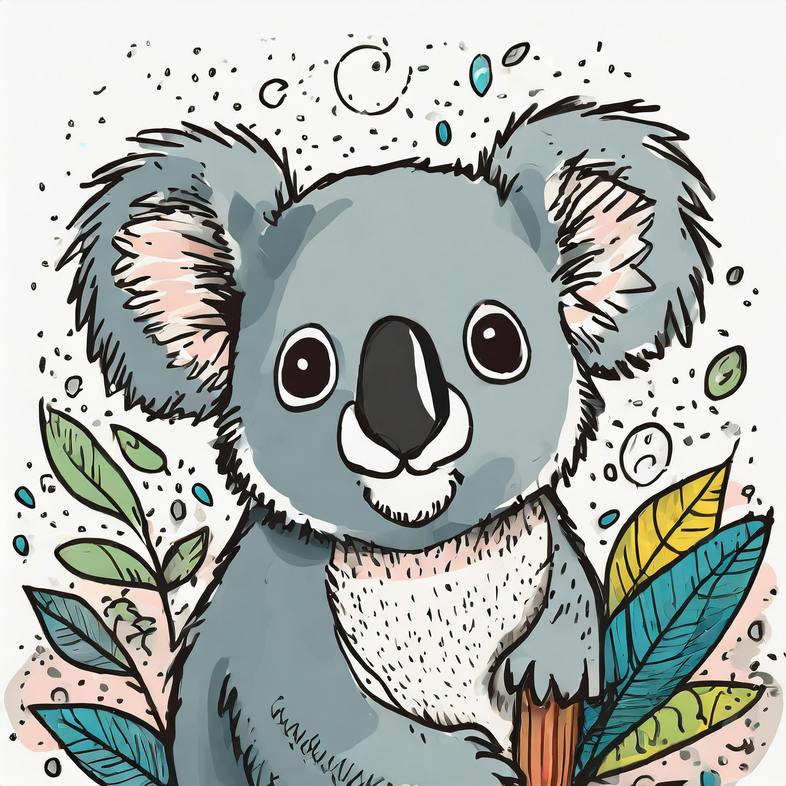
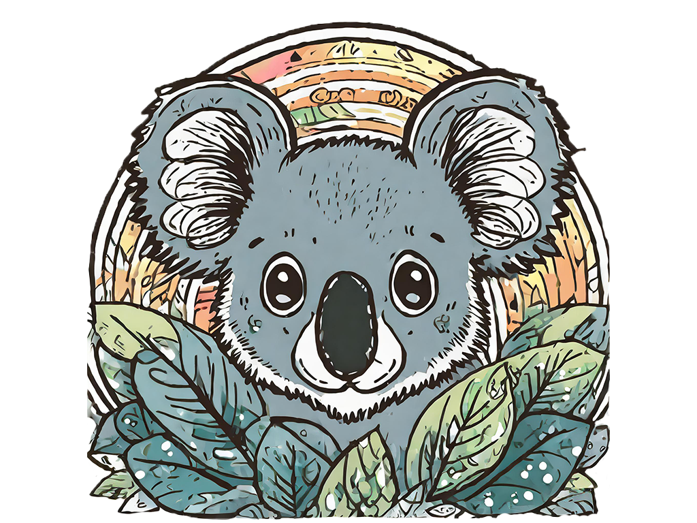

Here's some ways that you can help save the Koala:
- Donating to the Koala Foundation
- Join the Koala Army
- Speak or write your local congressmen
- Post information on social media
- Adopt a Koala
- Conduct a fundraiser
What you can do if you live in a Koala area:
- Plant Koala food trees. Don't forget out find out which kinds of gum trees are the favorites of Koalas in your area.
- When out driving, ask your family and friends to be very careful not to hit wildlife crossing roads, especially at night. Remember, Koalas are most active at night.
- Keep your dogs your cats inside at night, to protect all wildlife.
- If you have a swimming pool, place a sturdy rope into the pool attached to a tree or post at the edge, so that if Koalas fall into your pool, they are able to climb out safely.
